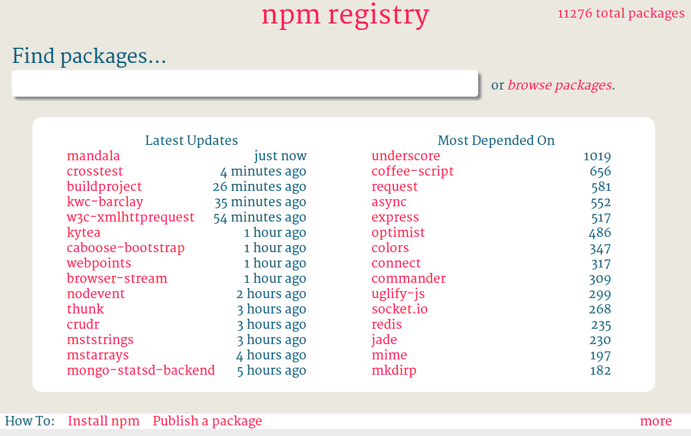

Node.js
An Overview
Heinrich Göbl
www.goebl.com
About me
|
|

What is Node?
- a platform
- built on Chrome's JavaScript V8 runtime
for
- easily building
- fast, scalable
- network applications.
What is Node?
- Uses an event-driven,
- non-blocking I/O model
- that makes it lightweight and efficient,
perfect for
- data-intensive
- soft-real-time applications
- that run across distributed devices.
And ...
- Server-Side JavaScript
- Based on Google V8 JS-Engine and libev + libeio
- Asynchronous Programming Style
- Single-Threaded, Evented Execution scales well
- Same Programming Language for Client and Server
- Linux, MacOS, Windows
Typical Uses
- (Soft) Real-Time Web Applications
- Highly Scalable Services
- Network Applications
- Server Part for WebSockets
- RESTful APIs (with JSON)
- Streaming Data
- Command Line (for JS-Developers)
Other facts/infos:
- Created by Ryan Dahl in 2009
- Now first man is Isaac Z. Schlueter
- A trademark of Joyent
- thousands of modules available
- vibrant community
- Sometimes compared with Ruby’s Event Machine or Python’s Twisted
- but presents the event loop as a language construct instead of as a library
REPL (Read-Eval-Print-Loop)
- Start node w/o a script name, just
node .help-> help.break-> escape from multiline command- <Ctrl>+<D> or
.exit-> exit - see some global objects:
process _is a handle for the last evaluation result
Demo!?
Hello World
console.log('Hello stdout-World');var http = require('http'), handler, server;
handler = function (req, res) {
res.writeHead(200);
res.end('Hello http-World');
};
server = http.createServer(handler);
server.listen(7001); // Port is 7001Modules
Definition (add.js)
function add(a, b) {
return a + b;
}
exports.add = add;Consumption (calc.js)
var add = require('./add.js').add;
console.log('4 + 5 =', add(4, 5));Local/Module Scope
Classic JavaScript
(function (global) {
var someLocalData = {};
function privateHelper() {}
global.tool = function () {
// use privateHelper
// access someLocalData
};
}(window));
Or use a Module Loader (AMD, ...)
Local/Module Scope
The Node Way
var someLocalData = {};
function privateHelper() {}
function mytool() {
// use privateHelper
// access someLocalData
}
exports.tool = mytool;Synchronous vs. Asynchronous
// synchronous (waiting ...)
var result = db.query("select * from tab");
// after some time:
result.forEach(/* use result */);
// asynchronous
db.query("select * from tab", function (result) {
result.forEach(/* use result */);
});
// proceeding w/o waitingAsync Style Advantages
- Small memory footprint
- Spend less time waiting for I/O ("non-blocking")
- No threading (single thread)
- Scales well for particular applications
- JavaScript is a good choice (functions are first-class objects)
Global Objects
- global
- process
- stdout, stderr, stdin
- on('exit'), on('uncaughtException')
- argv, cwd, env, ...
- nextTick(callback)
- require() - load/demand other modules
- module, module.exports, exports
- console, setTimeout, setInterval, ...
Core Modules
- modules compiled into the binary, e.g.
- net - TCP networking
- http, https - HTTP transport
- fs - access to the file-system
- event - EventEmitter
- path - similar to
java.io.FileClass - crypto, dns, url, util, os, zlib, ...
Example: net
var net = require('net');
net.createServer(function (stream) {
stream.write('hello\r\n');
stream.on('end', function () {
stream.end('goodbye\r\n');
});
stream.pipe(stream);
}).listen(7000);Asynchronous Programming Style
Callbacks
- async methods last parameter is a function (=callback)
- callbacks functions first parameter is error
- callbacks functions next parameters carry output data
Event Emitters
- one ore more subscribers to events
- call once or many times
- error situations have special event 'error'
Event Emitter Example
function LineInfoEmitter(options, rules) {
var self = this; // ...
function processData(data) { // ...
self.emit('lineInfo', lineInfo);
}
stdin.on('data', processData);
stdin.on('end', function () {
if (incompleteLine) {processData('\n');}
self.emit('end');
});
}
util.inherits(LineInfoEmitter, EventEmitter);Full source see github.com/hgoebl/entintar
Event Consumer
logstream = fs.createWriteStream(logfile, {flags:'w'});
logstream.on('open', function () {});
logstream.on('error', function (err) {});
lineInfoEmitter.on('lineInfo', function (lineInfo) {
logstream.write(lineInfo.line + '\n', encoding);
});
lineInfoEmitter.on('end', function () {
logstream.on('drain', function () {
logstream.end();
});
});Full source see github.com/hgoebl/entintar
Callback Example
function getSomeData(input, callback) {
db.asyncSelect(input, function(error, result) {
if (error) {
callback(error);
return;
}
// transform result, e.g. map/reduce
callback(null, result);
});
}Fight the X-mas Tree
client.useDatabase('mydb', function (err) {
if (err) { ... }
client.query("SELECT * FROM usr",
function (err, results, fields) {
if (err) { ... }
results.forEach(function (row) {
console.log(item);
});
client.end(function (err) {
if (err) { ... }
console.log('done');
});
});
});async
async.series([
function(){ ... },
function(){ ... }
]);- for browser and node.js
- over 20 functions
e.g. forEachLimit, mapSeries, filter, filterSeries, waterfall - see github.com/caolan/async,
npm install async
seq
Seq()
.seq(function () { ...; this(null,arg)})
.par(function (arg) { ...; this(null,a1})
.par(function (arg) { ...; this(null,a2})
.seq(function (a1, a2) { });- for node.js
- many functions
e.g. catch, forEach, seqEach, parEach, map, filter - github.com/substack/node-seq,
npm install seq
Demo/Examples?
npm
- packet manager for Node
- by Isaac Z. Schlueter
- install community packages
- manage dependencies and versions
- find packages
- publish own packages
- "Little-Maven" for node
package.json
{ "name": "marked",
"description": "A markdown parser built for speed",
"author": "Christopher Jeffrey",
"version": "0.1.6",
"main": "./lib/marked.js",
"bin": { "marked": "./bin/marked" },
"repository": "git://github.com/chjj/marked.git",
"keywords": [ "markdown", "markup", "html" ]
}Example shortened
Use npm
$ npm install mysql
$ npm install -g mocha
$ npm update
$ npm list
$ npm test
$ npm publishnpm config set browser chromium-browser
npm docs mocha
npm help
npm help npm
npm list | ls
npm test
npm up | update
npm start
-> defaults to node server.jsnpm registry

Community Modules
- Database drivers
- Parser
- Template engines
- Build and Deploy
- Async Flow Control
- ... almost all you can imagine ...
Example: jsdom
var jsdom = require("jsdom");
jsdom.env("http://localhost:8008/javascript/",
[ 'http://code.jquery.com/jquery-1.7.1.js' ],
function (error, window) {
if (error) { throw error; }
window.$('div.slide').
find('h1:first').
each(function (index) {
console.log(index, window.$(this).text());
});
});Connect
”Connect is a middleware framework for node, shipping with over 18 bundled middleware and a rich selection of 3rd-party middleware.“
var app = connect()
.use(connect.logger('dev'))
.use(connect.static('public'))
.use(function(req, res){
res.end('hello world\n');
})
.listen(3000);Connect Middleware
- logger request logger with custom format support
- compress Gzip compression middleware
- basicAuth basic http authentication
- bodyParser extensible request body parser
- cookieParser cookie parser
- session session management support with bundled MemoryStore
- static streaming static file server supporting Range and more
- query automatic querystring parser, populating req.query
- ...
express
- ”High performance, high class web development for Node.js“
- express extends connect
- can be used for web applications
- integration for many template engines, e.g. jade
- often combined with stylus - Expressive, dynamic, robust CSS
(similar to {less} or Sass) - Features (among many)
- Robust routing
- Redirection helpers
- Content negotiation
express Example
- JSON API (~RESTful)
- uses express/connect
- Database: MongoDB
- test with mocha
- see code-snippets/json-api-mongo/
GET /books
app.get('/books/:bookId([a-f0-9]{24})',
function (req, res) {
bookStore.findById(req.params.bookId,
function (error, book) {
if (error) {
res.send({ success:false, error:error});
} else if (book === null) {
res.send(404);
} else {
res.send({ success:true, data:book});
}
});
});jade - node template engine
|
|
Socket.IO
- WebSocket
- Adobe Flash Socket
- AJAX long polling
- AJAX multipart streaming
- Forever Iframe
- JSONP Polling
WebSocket Request
GET ws://localhost:8008/socket.io/1/websocket/ ↵
→ 16691598151823705646 HTTP/1.1
Origin: http://localhost:8008
Connection: Upgrade
Host: localhost:8008
Sec-WebSocket-Key: 5qE8eKPepP/xWhWnr2Mjqg==
Upgrade: websocket
Sec-WebSocket-Version: 13WebSocket Response
HTTP/1.1 101 Switching Protocols
Connection: Upgrade
Upgrade: websocket
Sec-WebSocket-Accept: RDaVahzV8dztrUzeJ9WXC5NesG8=IO - Server
var io = require('socket.io').listen(8118);
io.sockets.on('connection', function (socket) {
socket.on('new-message', function (data) {
console.log('arrived:', data, 'from:', socket.id);
socket.broadcast.emit('new-message', data);
});
});simplified - see code-snippets/nodejs/socket-io-server.js
IO - Client
<script src="/socket.io/socket.io.js"></script>
<script>
var socket = io.connect();
socket.on('new-message', function (data) {
console.log('message arrived', data);
$('#messages').append($('<li>').text(data));
});
$('#send').click(function () {
socket.emit('new-message', $('#msg').val());
});
</script>simplified - see code-snippets/nodejs/socket-io-client.html
Testing
- see JavaScript-slides!
Additional (Node only)
Debugging
- Use JetBrains IDEs if you can!
- IntelliJ IDEA
- PhpStorm
- WebStorm
- node-inspector - Web Inspector based nodeJS debugger
- For the server side:
node debug scrpt.jsnext next next cont ... - With Eclipse: possible with V8 Debugger plugin (howto)
Demo?
Node Hosting
Conclusion
Pro
- Node.js is lightweight and fast
- All libraries were built from scratch -> asynchronous
- Same language for client and server
- Helpful, enthusiastic community
Contra
- Package bazaar - Quality? Which should I use?
- Async programming is more difficult
- Good JavaScript programmers are hard to find
Reading
Internet
Books
- Node.js in Action,
Mike Cantelon, TJ Holowaychuk, Nathan Rajlich,
Manning Publications, 2012 - A lot of books are beeing written right now ...
Questions?

Thank you!
// my mail address
'hgoebl+goebl.com'.replace('+', '@')
|
|

{kind=link}